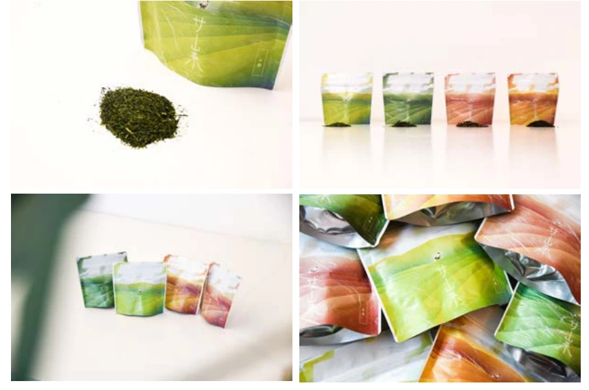

食・農 / サウナ / 埼玉
サ山茶

PROJECT INFORMATION
サウナ向け狭山茶「サ山茶」。商品企画に関わった取り組みです。
01 / 背景とテーマ
輪郭を与える
狭山茶は名前は知られていても、飲み比べる機会がほとんどありません。サウナという場に持ち込むことで、味の違いが体でわかる状況をつくった商品企画です。
02 / SCHEMAの担当範囲
全体を整える
SCHEMAは商品の企画を担当。緑茶・玉露・紅茶・ほうじ茶と、小屋ごとに種類を変える構成を設計し、ロウリュや水風呂、スチームにもお茶を使う形に組み立てました。
03 / 取り組みの視点
枠組みをひらく
ここで知って、実際に茶摘みに行く。施設での体験を、狭山という土地へ足を運ぶ入口として設計しています。埼玉県新商品AWARDで入賞しました。